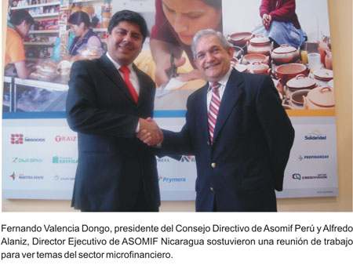

ASOMIF NICARAGUA DESTACA MANEJO DE MICROFINANZAS EN EL PERÚ EN REUNIÓN DE TRABAJO CON ASOMIF PERÚ

“La realidad de las microfinanzas en el Perú supera las proyecciones que teníamos antes de iniciar nuestra visita”, señaló hoy Alfredo Alaniz, Director Ejecutivo de ASOMIF Nicaragua, al concluir la reunión de trabajo que sostuvo con el directorio de ASOMIF Perú.
“El microcrédito en el Perú cuenta con una diversidad que no se encuentra en otros países, ha logrado establecer productos para todos los segmentos y realidades, es un aspecto muy positivo que debo de destacar”, refirió Alaniz.
“La labor de inclusión social y financiera que han logrado también es importante, nos llevamos experiencias importantes a nuestro país”, agregó.
Dijo que en Nicaragua no existen Cajas Municipales y Cajas Rurales, por lo que el modelo peruano será interesante y puesto a evaluación apenas retornen a su país.
“Los programas sociales de todo gobierno culminan cuando se acaba el dinero, pero el desarrollo económico de las personas sólo se logra, por ejemplo, con el trabajo que realizan las microfinanzas y eso se está viendo en el Perú”, remarcó.
Por su parte Fernando Valencia Dongo, presidente del Consejo Directivo de Asomif Perú, manifestó que la reunión ha permitido tender los primeros puentes entre ambas instituciones para compartir en un futuro inmediato experiencias y tecnologías para desarrollar el mercado del microcrédito a nivel regional.
“Ellos se encuentran en un proceso de redefinición de su esquema de desarrollo del sistema microfinanciero, es una etapa de crisis que están pasando que estamos seguros van a superar”, indicó.
El gobierno nicaragüense está por aprobar una ley que regula las tasas de interés y promueve una ley al movimiento del no pago, un escenario que ha motivado que las 19 asociadas de ASOMIF Nicaragua se encuentren a la búsqueda de experiencias exitosas de microcrédito, visitando países como el Perú.
La delegación centroamericana, compuesta además por diputados nicaragüenses, visitará mañana el Congreso de la República, han sostenido también una reunión con la Superintendencia de Banca y Seguros.
Lima 27 de mayo.